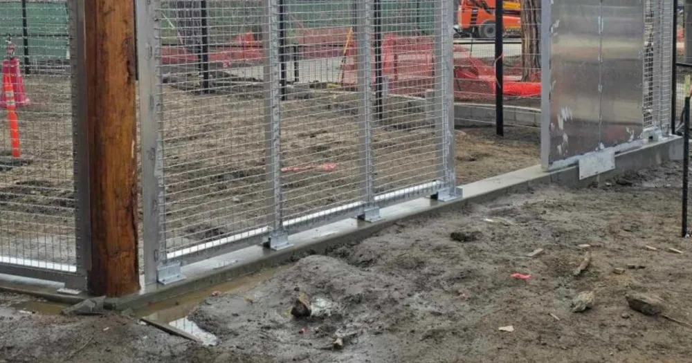

Quick Answer
Structural steel framing is the load-bearing framework that supports zoo enclosures, mesh systems, gates, and animal management infrastructure. Engineered for strength, durability, and long-term performance, structural steel frames provide the stability needed to safely contain animals while supporting efficient zoo operations and modern enclosure design.
Introduction
Every successful zoo enclosure begins with a strong foundation. While visitors often notice the animals, landscaping, and exhibit features, the structural framework supporting the entire habitat usually remains hidden behind the scenes.
That framework is structural steel framing, and it does far more than hold the enclosure up. It is the backbone the rest of the build hangs on, carrying everything from welded mesh systems and keeper doors to shift gates, holding areas, squeeze cages, and elevated platforms. Get the frame wrong and even the best components can't perform safely or last — which is why the framing, not the finishes, is where a durable enclosure really begins.
Modern zoological facilities demand structures capable of withstanding far more than their own weight. Zoo enclosures must resist environmental loads such as wind and rain while also accommodating the forces generated by powerful animals, moving gates, daily operational activities, and years of continuous use. Structural steel provides the strength, flexibility, and durability needed to meet these demanding requirements while allowing engineers to create customized enclosure layouts for different species and exhibit designs.
Beyond its structural performance, steel framing offers exceptional design flexibility. It enables fabricators to create open, visually appealing habitats that integrate seamlessly with mesh systems, enrichment equipment, veterinary facilities, and protected contact animal management systems. This adaptability has made structural steel the preferred material for many modern zoological projects.
Research in structural engineering demonstrates that properly designed steel framing provides outstanding strength-to-weight performance, predictable structural behavior, and long service life when combined with quality fabrication and appropriate corrosion protection. At the same time, enclosure design research emphasizes that well-engineered structural systems play an important role in supporting safe animal management, operational efficiency, and positive animal welfare outcomes.
What Is Structural Steel Framing?
Structural steel framing is a system of interconnected steel members that forms the primary load-bearing structure of a building or engineered facility. In zoo enclosures, these members work together to support enclosure walls, mesh panels, roofs, gates, platforms, climbing structures, and other critical infrastructure.
Unlike conventional fencing systems, structural steel framing is specifically engineered to safely transfer loads throughout the structure. Columns, beams, bracing, and connections are carefully designed to resist forces generated by environmental conditions and animal activity while maintaining stability throughout the enclosure's service life.
Because no two zoo exhibits are identical, structural steel framing is almost always custom-designed. Engineers evaluate the enclosure layout, target species, expected loading conditions, operational workflow, and future maintenance requirements before determining the appropriate structural system.
This flexibility allows steel framing to support a wide range of zoological environments — from large carnivore habitats and elephant exhibits to primate enclosures, aviaries, reptile houses, and animal holding facilities — while providing a reliable foundation for every other enclosure component.
The Backbone of Modern Zoo Enclosures
Structural steel framing does far more than hold an enclosure together. It creates the framework that allows every major enclosure system to function as an integrated whole. A properly engineered steel frame supports:
- Zoo mesh systems
- Keeper doors
- Shift gates
- Holding areas
- Squeeze cages
- Elevated platforms
- Animal transfer corridors
- Enrichment equipment
- Roof structures
- Maintenance access systems
By integrating these components into one cohesive structure, structural steel framing helps create enclosures that are safe for animals, efficient for zoo staff, and durable enough to withstand decades of demanding operation. For zoological facilities investing in long-term infrastructure, structural steel remains one of the most dependable and adaptable construction materials available.
Why Structural Steel Framing Is the Preferred Choice for Zoo Enclosures
Not all construction materials are suitable for zoological facilities. Zoo enclosures are expected to perform reliably under demanding conditions while ensuring the safety of animals, keepers, and visitors. Unlike conventional buildings or commercial fencing, enclosure structures must withstand continuous exposure to outdoor environments, daily operational activities, and the unique physical behaviors of different animal species.
For these reasons, structural steel framing has become the preferred choice for modern zoo enclosure construction. Its exceptional strength, versatility, and long-term durability allow engineers to design safe and efficient habitats that meet both operational and animal welfare objectives.
Superior Strength and Structural Performance
One of the greatest advantages of structural steel is its outstanding strength-to-weight ratio. Structural steel members can support substantial loads without requiring excessively large sections, allowing engineers to create open enclosure designs that maximize visibility while maintaining structural stability. In zoo environments, structural framing may need to resist:
- Dead loads from enclosure components
- Wind loads on large mesh panels
- Roof and canopy loads
- Dynamic forces from moving gates
- Impact loads from large animals
- Equipment and maintenance loads
Properly engineered steel framing distributes these forces throughout the structure, helping maintain long-term safety and structural integrity.
Design Flexibility for Every Animal Species
No two zoo exhibits are exactly alike. A tiger enclosure has different structural requirements than an aviary, while elephant habitats require significantly different framing systems than primate exhibits. Structural steel provides the flexibility needed to accommodate these varying design requirements. Engineers can fabricate steel members into virtually any configuration, allowing enclosures to be customized for:
- Large carnivores
- Primates
- Elephants
- Rhinoceroses
- Bears
- Hoofstock
- Aviaries
- Reptile exhibits
- Marine animal facilities
This flexibility enables zoological facilities to create habitats that reflect both the behavioral needs of the animals and the operational goals of the institution.
Supporting Complex Zoo Infrastructure
Structural steel framing serves as the foundation for nearly every major enclosure component. Rather than functioning as a standalone framework, it supports an integrated animal management system that includes zoo mesh systems, keeper doors, shift gates, holding areas, squeeze cages, transfer corridors, elevated walkways, veterinary access areas, feeding stations, and environmental enrichment structures. By connecting these elements into a single engineered system, structural steel framing allows zoo staff to manage animal movement safely and efficiently while maintaining protected contact procedures.
Durability in Challenging Environments
Zoo enclosures remain in service year-round and are continuously exposed to demanding environmental conditions. Rain, humidity, temperature changes, ultraviolet radiation, cleaning chemicals, and animal waste can all contribute to material deterioration if the structure is not properly protected.
Structural steel is particularly well suited for these environments because it can be manufactured with protective systems such as galvanizing and industrial coating applications that significantly improve corrosion resistance. With proper engineering, fabrication, and routine maintenance, structural steel framing can deliver reliable performance for decades, making it a cost-effective long-term investment for zoological facilities.
Efficient Fabrication and Future Expansion
Modern zoos frequently renovate exhibits, expand habitats, or modify facilities as animal care practices evolve. Structural steel supports these changing requirements because it can be fabricated with high precision and adapted more easily than many traditional construction materials. Custom-fabricated framing systems allow engineers to:
- Expand existing enclosures
- Modify exhibit layouts
- Install additional mesh systems
- Integrate new keeper access points
- Add enrichment structures
- Upgrade animal management systems
This adaptability helps zoological facilities respond to changing operational needs without completely rebuilding existing infrastructure.
Supporting Animal Welfare Through Better Engineering
Although animals rarely interact directly with the structural frame itself, the engineering behind that framework has a significant influence on enclosure quality. A well-designed steel structure allows architects and zoological planners to create larger viewing areas, integrate naturalistic landscaping, support climbing structures, and incorporate enrichment features without compromising structural safety.
Research in zoo enclosure design consistently shows that carefully planned habitats promote better management practices and create environments that encourage species-appropriate behaviors. Structural steel framing provides the flexibility needed to achieve these goals while maintaining the high safety standards required in modern zoological facilities.
Long-Term Value for Zoo Owners
Zoo infrastructure represents a substantial long-term investment. Selecting structural steel framing helps reduce lifecycle costs by providing exceptional structural reliability, low maintenance requirements, long service life, flexible future modifications, high-quality fabrication, and excellent compatibility with custom enclosure systems. When combined with professional engineering and precision fabrication, structural steel continues to be one of the most dependable solutions for constructing safe, durable, and efficient zoo enclosures.
Structural Components of a Zoo Enclosure
Every framing system consists of multiple structural elements working together to transfer loads safely to the foundation. Depending on the enclosure design, engineers may specify:
- Wide flange beams
- Structural columns
- Hollow structural sections (HSS)
- Steel channels
- Angles
- Plates
- Cross bracing
- Base plates
- Connection assemblies
Each member is selected for its structural job, the loads it will see, and how it has to work with everything around it. Combine those elements well and you get a frame that is both strong and adaptable — from the base plates and anchors that tie it to the foundation to the columns and beams that carry the mesh systems, gates, and roof above. On the University of Miami research holding pens, for instance, we fabricated the whole framework in stainless steel so it could take constant wash-downs without corroding — a materials call driven entirely by how that facility runs day to day.
Engineering and Fabrication of Structural Steel Framing
Designing a structural steel frame for a zoo enclosure involves far more than selecting steel beams and connecting them together. Every structural component must be engineered to safely support enclosure systems while accounting for the behavior of the animals, environmental conditions, maintenance requirements, and the long-term operational needs of the facility. From the earliest design stages to final installation, precision engineering and quality fabrication play a critical role in ensuring that the completed structure performs safely and reliably throughout its service life.
Structural Engineering Begins with Load Analysis
Before any steel member is fabricated, engineers evaluate the loads that the structure will experience. Unlike conventional commercial buildings, zoo enclosures are subject to a combination of structural, environmental, and operational forces that vary depending on the species being housed and the enclosure's intended function. Typical design considerations include:
- Dead loads from structural members and enclosure components
- Live loads from maintenance personnel and equipment
- Wind loads acting on mesh panels and roof systems
- Seismic loads where applicable
- Dynamic loads from moving gates and mechanical equipment
- Animal-generated forces such as pushing, climbing, leaning, or impact
Accurate load analysis allows engineers to determine the appropriate member sizes, connection details, and support systems needed to maintain structural stability while avoiding unnecessary material costs.
Precision Fabrication Ensures Structural Reliability
Even the most carefully engineered design depends on accurate manufacturing. Professional fabrication begins with detailed shop drawings that define every structural member, connection, weld, and dimensional tolerance before production starts. During fabrication, steel members are:
- Cut to precise dimensions
- Drilled or machined where required
- Welded according to approved procedures
- Assembled for dimensional verification
- Prepared for protective coatings
- Inspected before shipment
Maintaining tight fabrication tolerances helps ensure that every component fits correctly during installation, reducing delays and improving the overall quality of the finished enclosure.
Welding and Structural Connections
Connections are among the most critical parts of any structural steel frame. Regardless of how strong individual steel members may be, the overall performance of the structure depends on properly designed and fabricated connections that safely transfer forces throughout the framing system. Common connection methods include:
- Full-penetration welds
- Fillet welds
- Bolted structural connections
- Base plate anchor systems
- Gusset plate assemblies
- Moment and shear connections
Connection selection depends on structural loading, fabrication requirements, constructability, and long-term maintenance considerations. High-quality welding and accurate connection detailing contribute significantly to the safety and durability of zoo enclosure structures.
Corrosion Protection for Long-Term Performance
Zoo structures operate in environments that can accelerate corrosion if steel is left unprotected. Outdoor exposure, humidity, rainfall, cleaning chemicals, animal waste, and changing temperatures all affect the lifespan of structural steel. To improve durability, fabricated steel components are commonly protected using systems such as:
- Hot-dip galvanizing
- Powder coating
- Zinc-rich primers
- Multi-layer industrial coating systems
The choice of protective coating depends on environmental conditions, project specifications, and long-term maintenance objectives. Effective corrosion protection helps preserve both the structural integrity and appearance of the enclosure while reducing future maintenance costs.
Quality Control Throughout Fabrication
Quality assurance is essential at every stage of structural steel fabrication. Professional manufacturers implement inspection procedures to verify that fabricated components meet engineering drawings and project specifications before installation. Typical quality control measures include:
- Material verification
- Dimensional inspections
- Weld quality inspections
- Surface preparation checks
- Coating thickness verification
- Hardware inspection
- Final assembly review
By identifying potential issues before installation, quality control helps ensure that the completed framing system performs as intended throughout its service life.
Integrating Structural Steel with Complete Zoo Enclosure Systems
Structural steel framing does not function independently. It serves as the framework that supports every major enclosure component, including zoo mesh systems, keeper doors, shift gates, holding areas, squeeze cages, animal transfer corridors, elevated platforms, environmental enrichment equipment, and maintenance access structures. Designing these components as a unified structural system improves operational efficiency, simplifies future modifications, and enhances the overall safety of the enclosure. This integrated engineering approach allows zoological facilities to create habitats that are not only structurally sound but also practical for daily animal care and long-term management.
Choosing the Right Structural Steel Fabrication Partner
Structural steel framing is a long-term investment that directly influences the safety, reliability, and lifespan of a zoo enclosure. While proper engineering is essential, the quality of fabrication is equally important. Even the best structural design can be compromised by poor workmanship, inaccurate fabrication, or inadequate quality control. Choosing an experienced structural steel fabrication partner helps ensure that every component is manufactured to specification, performs as intended, and supports the long-term success of the enclosure.
Zoo enclosure projects require more than general steel fabrication experience. They demand an understanding of structural engineering, animal management systems, and the unique operational requirements of zoological facilities. When selecting a fabrication partner, several factors should be carefully evaluated.
Engineering Expertise
A reliable fabricator should work closely with engineers, architects, and project teams to ensure every structural component is manufactured according to the approved design. This includes understanding structural load requirements, member sizing, connection details, fabrication tolerances, material specifications, and installation requirements. Engineering knowledge helps minimize fabrication errors while ensuring the completed structure performs as intended.
Precision Manufacturing
Accurate fabrication is critical because structural steel components must fit together precisely during installation. Professional fabrication facilities use advanced equipment and detailed quality procedures to produce components with consistent dimensional accuracy. Precision manufacturing contributes to faster installation, better structural alignment, reduced field modifications, improved connection fit-up, and greater overall construction efficiency. These advantages help reduce project delays while improving the long-term performance of the enclosure.
High-Quality Welding and Workmanship
Structural steel framing relies heavily on the quality of its welded and bolted connections. Poor welding can reduce structural capacity, create maintenance problems, and shorten the service life of the enclosure. Professional fabricators maintain high workmanship standards through qualified welding procedures, skilled welders, thorough weld inspections, dimensional verification, and continuous quality assurance. Consistent workmanship ensures that every structural component contributes to the overall strength and reliability of the finished enclosure.
Protective Finishes for Long-Term Durability
Because zoo enclosures operate outdoors, protective coatings are essential for preserving structural steel over time. An experienced fabrication partner should recommend corrosion protection systems appropriate for the project's environmental conditions and maintenance strategy. Depending on the application, this may include hot-dip galvanizing, powder coating, industrial paint systems, zinc-rich primer systems, and multi-layer protective coatings. Selecting the right finish helps extend service life while reducing future maintenance costs.
Custom Fabrication Capabilities
Every zoological facility has different operational goals, exhibit layouts, and species requirements. A qualified fabrication partner should be capable of producing custom structural steel framing for zoo mesh systems, keeper doors, shift gates, holding areas, squeeze cages, transfer corridors, elevated platforms, visitor viewing structures, maintenance access systems, and environmental enrichment support structures. Custom fabrication ensures that every structural component integrates seamlessly into the complete enclosure system.
Frequently Asked Questions
What is structural steel framing?
Structural steel framing is a load-bearing framework made from engineered steel members that support buildings, industrial facilities, and specialized structures such as zoo enclosures. It provides the strength and stability needed to safely carry structural and operational loads.
Why is structural steel used for zoo enclosures?
Structural steel offers excellent strength, durability, and design flexibility. It supports large spans, integrates easily with mesh systems and animal management equipment, and can be custom fabricated to suit different animal species and enclosure layouts.
How long does structural steel framing last?
With proper engineering, corrosion protection, routine inspections, and maintenance, structural steel framing can remain in service for several decades while maintaining its structural performance.
Can structural steel framing be customized?
Yes. Nearly every zoo enclosure requires a custom structural framing system designed around the specific exhibit layout, target species, operational workflow, and project requirements.
What protects structural steel from corrosion?
Common protection systems include hot-dip galvanizing, powder coating, zinc-rich primers, and industrial protective coatings. The most suitable system depends on environmental conditions and the expected service life of the structure.
Why is quality fabrication important?
Precision fabrication ensures structural members fit correctly, connections perform as designed, coatings are properly applied, and the completed enclosure maintains its strength, safety, and durability throughout its lifespan.
Final Thoughts
Structural steel framing is the foundation of every successful zoo enclosure. It provides the strength, stability, and flexibility needed to support modern habitats while accommodating the complex operational requirements of zoological facilities.
From supporting zoo mesh systems and keeper doors to integrating shift gates, holding areas, squeeze cages, and environmental enrichment structures, structural steel framing connects every enclosure component into a single, reliable system.
When combined with sound engineering, precision fabrication, and appropriate corrosion protection, structural steel delivers exceptional long-term performance, making it one of the most trusted construction materials for modern zoo infrastructure.
References
This article draws upon established structural engineering principles and zoological enclosure design research, including:
- Structural steel design and fabrication references from leading engineering textbooks.
- Research on steel construction, structural behavior, and fabrication practices published by Taylor & Francis and other engineering publishers.
- Industry guidance on structural steelwork, corrosion protection, welding, and quality assurance.
- Zoo enclosure design research published in Zoo's Print, supporting the relationship between structural systems, enclosure functionality, and animal management.